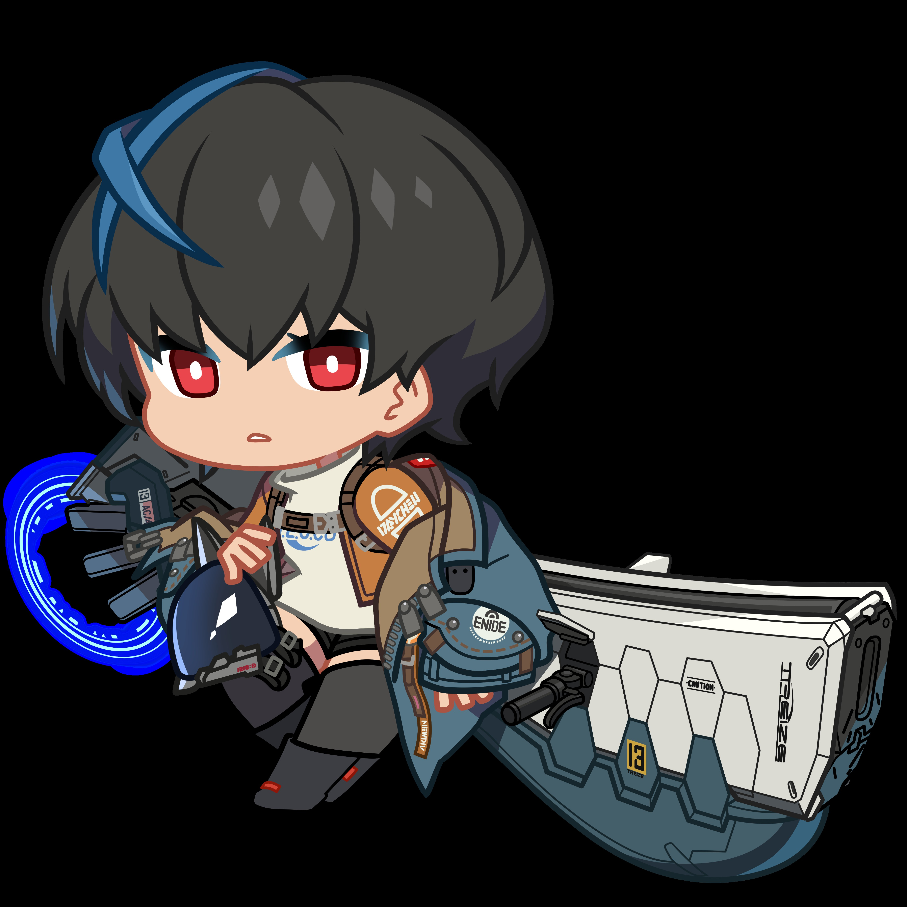
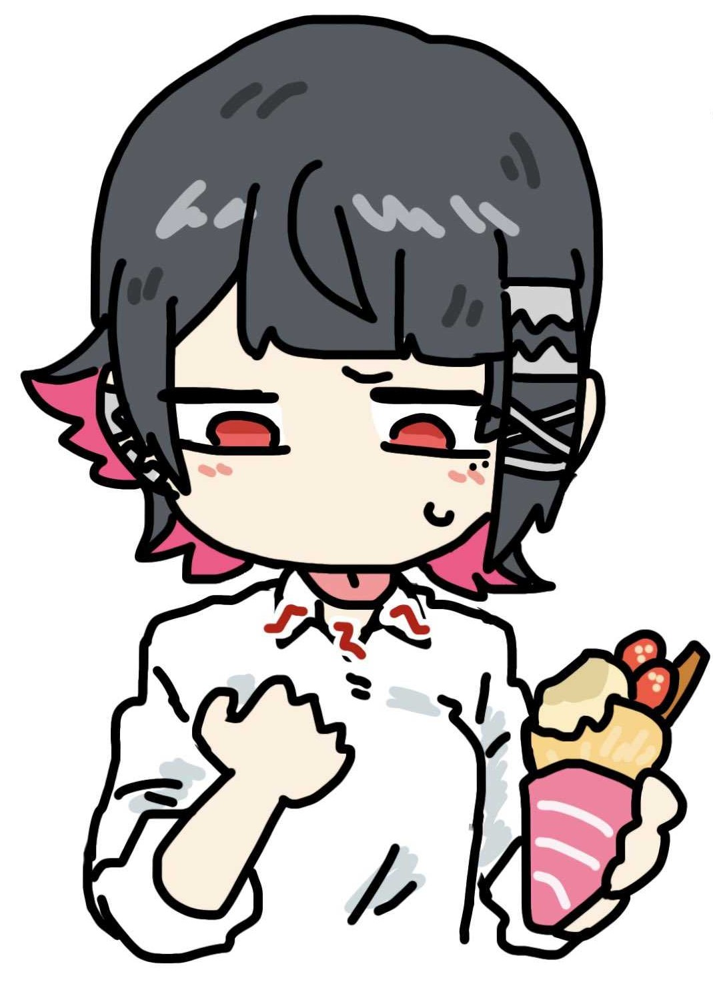

About Myself
I am a computer science student who enjoys spending my free time exploring the digital world.
My main interests are in, Music, Games, and Movies. Besides that, I really enjoy sitting back and relaxing on my boarding house's terrace.
Hope you enjoy my profile.
Hallo everyone 😊.
About My Music
Music is one of my favorite things to do. I usually listen to music while studying, playing games, or just relaxing.
My Favorite Genres
- Indie
- Pop
- Rock
- Alternative
My Top 7 Songs
- Rex Orange County - Sunflower
- Radiohead - Fake Plastic Trees
- Yorushika - Shisō-han
- Science Noodles - Summer We Know
- Rex Orange County - Pluto Projector
- Joji - Sanctuary
- HYBS - Dancing with My Phone
My Top 5 Artists
- Rex Orange County
- Yorushika
- Radiohead
- Joji
- Science Noodles
About My Games
Games are another important thing for me. I enjoy playing different types of games depending on my mood.
My Favorite Games
- Guilty Gear
- Street Fighter
- Hollow Knight
- Elden Ring
- Persona
- Rubinite
- Zenless Zone Zero
- Reverse 1999
Game Ranking
| No. | Genre | Rating |
|---|---|---|
| 1 | Fighting | 10/10 |
| 2 | Souls-like | 9,5/10 |
| 3 | RPG | 9,5/10 |
| 4 | Action | 9/10 |
| 5 | VN | 8,5/10 |
My Favorite Game Characters
Here are some of my favorite characters from games that I enjoy playing:
1. Unika

Game: Guilty Gear
Why I like them: I like this character because the button inputs are easy to understand when I play as this character, and for a few other reasons I can't reveal.
2. Ellen Joe

Game: Zenless Zone Zero
Why I like them: I like this character because I like her design. She's a shark, and I like sharks.
"Carpe diem, quam minimum credula postero."
My Social Media & Links
You can find me on these platforms: